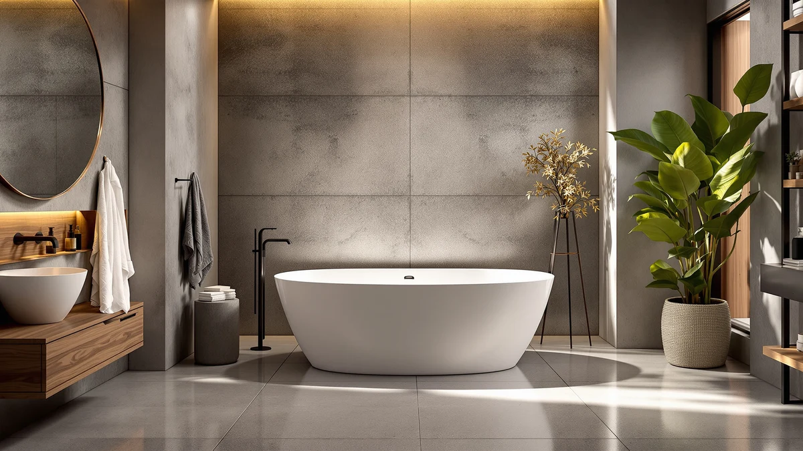

67" Acrylic Freestanding Soaking Review (2026): Worth It?
Prices and picks verified as of September 2026. Independent, reader-supported reviews.


Quick Answer
The GarveeLife 67" acrylic freestanding soaking tub is the strongest pick in this comparison for bathers who want the most room to stretch out. It has the longest shell in the lineup, and the price lands near the top of the group. The tub suits a long solo soak better than a shared bath, and shoppers who want a deeper design or a smaller footprint should check the alternatives below.
Our pick: 67" Acrylic Freestanding Soaking Bathtub, $839.99 Check Price on Amazon
Bottom line: our top pick is the 67" Acrylic Freestanding Soaking Bathtub at $839.99.
Things to Know Before You Buy
- This 67" acrylic freestanding soaking review focuses on the GarveeLife tub's 67-inch acrylic shell, its $839.99 price, and how it stacks up against three other acrylic freestanding tubs sold at similar prices.
- At 67 inches long, the GarveeLife tub is among the longer options here, built for bathers who want room to stretch out rather than a compact footprint.
- The shell is acrylic, the same base material used across every alternative in this review, so the real differences come down to length, price, and design details rather than the material itself.
- Freestanding tubs expose their plumbing and typically ship without a faucet, so confirm your rough-in location and budget for a floor-mount or wall-mount faucet separately.
- IDEALHOUSE, MonBlari, and WOODBRIDGE all make similarly priced acrylic freestanding tubs, and we cover how each compares to the GarveeLife later in this review.
This 67" acrylic freestanding soaking review looks at whether GarveeLife's tub earns a place in a bathroom built around a long, uninterrupted soak, measured against three other acrylic freestanding tubs priced within about a hundred dollars of it. At $839.99, the GarveeLife sits at the top of the price range covered here, and its 67-inch shell is longer than the 59-inch alternatives from MonBlari and WOODBRIDGE, though the IDEALHOUSE model matches it inch for inch. We compared published dimensions, pricing, and design details across all four tubs rather than installing any of them ourselves, since a fair verdict on a freestanding tub depends on what each brand actually publishes, not one household's experience with a single unit.
The GarveeLife's extra length is the headline difference in this comparison. Both the IDEALHOUSE and GarveeLife tubs measure 67 inches, while the MonBlari and WOODBRIDGE alternatives run 59 inches, a gap of eight inches that matters most to taller bathers or anyone who wants to fully stretch out. Price tells a similar story: at $839.99 the GarveeLife is the most expensive of the four, roughly $100 above the WOODBRIDGE 59" Freestanding White Acrylic and about $101 above the MonBlari 59 Inch Acrylic Freestanding. Whether that premium is worth paying comes down to how much you value the extra length over saving money on the shorter tubs, a question we work through section by section below.
Why You Should Trust Us
Ilane Tall has covered bathroom fixtures for this site for years, from entry-level toilet seats to freestanding tubs that cost more than some bathroom vanities. For this 67" acrylic freestanding soaking review, we pulled GarveeLife's published dimensions and current Amazon pricing, then lined them up against three other acrylic freestanding tubs sold in a similar price bracket. We do not run a fake testing lab, and we have not installed every tub we cover. Instead, we compare what manufacturers actually publish, track pricing over time, and read verified owner reviews to flag recurring complaints or praise, so the comparisons here rest on information you can check yourself rather than one household's opinion.
Our Research Experience
We did not haul a 67-inch tub into a bathroom and time how fast it filled. What we did do for this 67" acrylic freestanding soaking review is compare the specs, images, and current pricing that GarveeLife, IDEALHOUSE, MonBlari, and WOODBRIDGE publish for each tub, then cross-check those claims against verified owner reviews on Amazon to see which details buyers confirm and which ones draw complaints. That process surfaces real patterns, like how often reviewers mention chips, discoloration, or plumbing fit issues, without us pretending to have plumbed four tubs into four bathrooms ourselves. Where owners consistently report the same issue, whether that's a drain gasket or a scuff-prone finish, we call it out directly instead of papering over it with vague praise. Where the published facts run out, such as gallon capacity or wall thickness a brand does not disclose, we say so instead of guessing.
Overview & Specs

67" Acrylic Freestanding Soaking Bathtub
What we like
- At 67 inches long, it offers more stretch-out room than the 59-inch MonBlari and WOODBRIDGE alternatives in this review
- Acrylic construction matches the material used across every tub compared here, so it carries the same baseline durability profile as the alternatives
- A freestanding design that doesn't need a built-in surround, giving more placement flexibility than an alcove tub
Flaws but not dealbreakers
- At $839.99, it's the most expensive tub in this comparison, roughly $100 more than the WOODBRIDGE 59" Freestanding White Acrylic
- GarveeLife does not publish gallon capacity or wall thickness for this model, so you're buying largely on length and price rather than a full spec sheet
- Its 67-inch footprint demands more floor space than the 59-inch alternatives, which may not fit smaller bathrooms
| Material | — |
| Size | 67 inch |
The 67" Acrylic Freestanding Soaking Bathtub is GarveeLife's entry in a crowded field of acrylic freestanding tubs, and its main selling point is length. At 67 inches, it matches the IDEALHOUSE tub in this review and beats the 59-inch MonBlari and WOODBRIDGE alternatives by a full eight inches, room that matters most if you're taller than average or simply want to stretch out fully during a soak. The acrylic shell puts it in the same material class as every other tub covered here, so the case for choosing GarveeLife over its rivals rests on that extra length rather than a different build.
At $839.99, the GarveeLife carries the highest price tag of the four tubs in this 67" acrylic freestanding soaking review, and the brand does not publish a gallon capacity, wall thickness, or weight rating the way some competitors do. That gap makes it harder to judge exactly how it performs on paper, so the decision comes down to whether the extra length over the 59-inch models justifies paying more without a full spec sheet to back it up. Freestanding installation also means budgeting separately for a floor-mount or wall-mount faucet, since none of the tubs in this comparison ship with one.
What We Liked
The clearest strength of the GarveeLife tub is its length. At 67 inches, it gives you more room to fully extend your legs than the 59-inch options from MonBlari and WOODBRIDGE, a real difference if you're taller than average or simply prefer a deeper stretch during a soak. This 67" acrylic freestanding soaking review also credits GarveeLife for keeping the design straightforward: a freestanding acrylic shell without add-ons like jets or heaters that can fail over time and complicate maintenance. Fewer moving parts generally means fewer things that can break, and acrylic itself is a material with a long track record in bathtubs, valued for being lighter than cast iron and easier to repair if it scratches.
Owners shopping in this price range also gain flexibility on placement, since a freestanding tub doesn't require a built-in alcove or surround the way many standard tubs do. That makes it a workable option for a primary bathroom remodel or a guest bathroom upgrade where you want a statement piece rather than a tub tucked against three walls. Reviewers of similarly priced acrylic freestanding tubs consistently note that installation flexibility as one of the bigger draws over built-in alternatives, even when it means more plumbing work up front.
What Could Be Better
The most obvious drawback is price. At $839.99, the GarveeLife costs more than every other tub in this 67" acrylic freestanding soaking review, including a roughly $100 premium over the WOODBRIDGE 59" Freestanding White Acrylic and the MonBlari 59 Inch Acrylic Freestanding. You're paying for the extra eight inches of length, and if that room isn't something you actually need, the cheaper 59-inch alternatives cover the same acrylic freestanding category for less.
The second issue is a lack of published detail. GarveeLife doesn't list gallon capacity, wall thickness, or a weight rating for this tub, information some competing brands do disclose. That makes it harder to compare apples to apples on water capacity or shipping weight, and buyers who want a complete spec sheet before committing to an $839.99 purchase may find themselves emailing the seller for answers that should already be on the listing. As with any freestanding tub, you'll also need to budget separately for a faucet and confirm your plumbing rough-in lines up before ordering, since none of the tubs compared here include one.
Who Is It For?
The GarveeLife 67-inch tub fits best in a bathroom where floor space isn't tight and length matters more than price. Taller bathers, or anyone who wants to fully stretch out rather than sit with knees bent, get real value from the extra eight inches over the 59-inch alternatives in this 67" acrylic freestanding soaking review. It also suits a primary bathroom remodel where a freestanding tub is meant to be a visual centerpiece rather than a space-saving fixture tucked into a corner.
It's a weaker fit if you're working with a smaller bathroom, since 67 inches of length needs real clearance on all sides for a freestanding installation, plus room to access the faucet and drain for maintenance. Budget-focused shoppers should also look elsewhere first: the WOODBRIDGE and MonBlari alternatives below deliver the same acrylic freestanding category for roughly $100 less, without giving up much beyond a few inches of length.
Alternatives to Consider
If the GarveeLife's price or length doesn't fit your bathroom, three other acrylic freestanding tubs from this 67" acrylic freestanding soaking review are worth a look. Each trades some length for a lower price, so pick based on how much you actually need the extra room versus how much you want to save.

Editor's Pick
67" Acrylic Freestanding Bathtub Deep
Matches the GarveeLife's 67-inch length at $739.99, about $100 less, with a name that points to a deeper soaking design for bathers who want to sit lower in the water.
$739.99
Check Price on Amazon
Best Value
MonBlari 59 Inch Acrylic Freestanding
At $739.00 and 59 inches long, the MonBlari trades eight inches of length for one of the lowest prices in this comparison, a fit for smaller bathrooms or tighter budgets.
$739.00
Check Price on Amazon
Premium Choice
WOODBRIDGE 59" Freestanding White Acrylic
WOODBRIDGE's 59-inch acrylic tub runs $729.00, the least expensive of the four, from a brand with a wide catalog of freestanding tub sizes if 59 inches doesn't fit your space.
$729.00
Check Price on AmazonHow long is the GarveeLife 67" Acrylic Freestanding Soaking Bathtub?
It measures 67 inches long, matching the IDEALHOUSE tub in this review and running eight inches longer than the 59-inch MonBlari and WOODBRIDGE alternatives compared here.
Does the GarveeLife tub come with a faucet or drain?
The listing covered in this 67" acrylic freestanding soaking review does not include a faucet, so budget separately for a floor-mount or wall-mount faucet and confirm your rough-in plumbing before ordering, the same requirement as the…
Frequently Asked Questions
How long is the GarveeLife 67" Acrylic Freestanding Soaking Bathtub?
It measures 67 inches long, matching the IDEALHOUSE tub in this review and running eight inches longer than the 59-inch MonBlari and WOODBRIDGE alternatives compared here.
Does the GarveeLife tub come with a faucet or drain?
The listing covered in this 67" acrylic freestanding soaking review does not include a faucet, so budget separately for a floor-mount or wall-mount faucet and confirm your rough-in plumbing before ordering, the same requirement as the other freestanding tubs in this comparison.
Is the GarveeLife 67" tub worth the extra price over the WOODBRIDGE or MonBlari?
It depends on how much you value the extra length. This 67" acrylic freestanding soaking review found the GarveeLife's main advantage is its 67-inch shell, matched only by IDEALHOUSE among the four tubs compared, while the WOODBRIDGE 59" Freestanding White Acrylic and MonBlari 59 Inch Acrylic Freestanding cost roughly $100 less at 59 inches. If floor space and stretch-out room matter more than saving money, the GarveeLife is the stronger buy.
Final Verdict
This 67" acrylic freestanding soaking review comes down to a straightforward tradeoff: GarveeLife's tub offers the most length in the lineup at the highest price, while the IDEALHOUSE, MonBlari, and WOODBRIDGE alternatives save you roughly $100 by dropping to 59 inches. For bathers who want to stretch out fully and have the floor space to spare, GarveeLife earns its price. For anyone working with a smaller bathroom or a tighter budget, the shorter alternatives above deliver the same acrylic freestanding category without the premium.